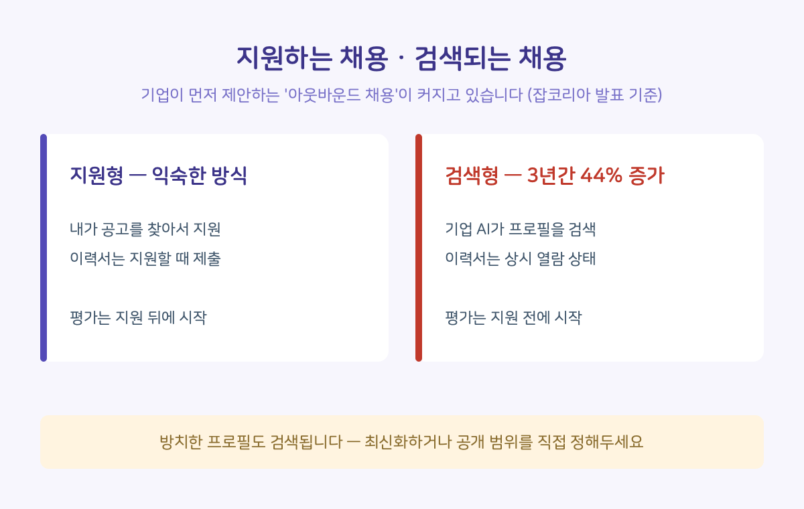
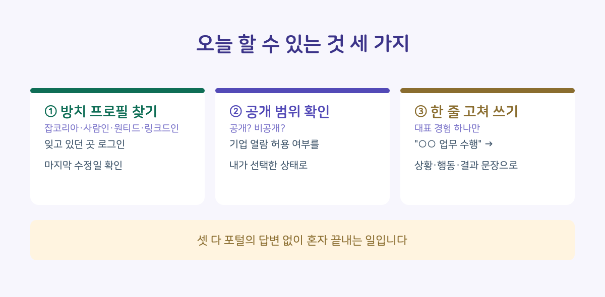

지원한 적 없는 회사에서 면접 제안 메시지를 받아본 적 있으신가요. 우연이 아니라 구조가 바뀌고 있는 겁니다. 기업이 구직자에게 먼저 입사를 제안하는 '아웃바운드 채용'이 최근 3년간 44% 늘었다는 발표가 나왔습니다.
공개 자료를 바탕으로, 이 변화가 취준생에게 뭘 의미하는지 정리해봤습니다.
■ 무슨 일이 있었나
잡코리아는 올해 3월 기업용 통합 채용 솔루션 '하이어링센터'를 공개했습니다. 그 안의 AI 기반 '탤런트 에이전트'는 채용담당자가 자연어로 원하는 인재를 설명하면, 채용 맥락을 이해해 후보자를 추천하고 추천한 이유까지 함께 제시합니다.
지금까지 취업포털의 AI는 주로 구직자 쪽 도구였습니다. 자소서 첨삭, 공고 추천 같은 것들이죠. 이번엔 방향이 반대입니다. 같은 포털이 기업 쪽에 AI를 팔기 시작했고, 그 AI가 읽는 대상이 바로 우리가 올려둔 프로필입니다.
이름이 비슷해서 짚고 갑니다. AI 역량검사로 알려진 '잡다(JOBDA)'는 다른 회사(마이다스인)의 서비스입니다. 오늘 이야기는 취업포털 잡코리아 쪽입니다.
■ 숫자 하나 — 아웃바운드 채용 44% 증가
잡코리아에 따르면 기업이 먼저 입사를 제안하는 아웃바운드 채용이 최근 3년간 44% 늘었습니다. 지원서를 내고 기다리는 방식과 나란히, 올려둔 프로필이 먼저 검색되는 흐름이 커지고 있다는 뜻입니다.
한 가지는 정확히 해두겠습니다. 이 44%는 잡코리아 플랫폼 데이터 기준 수치입니다. 채용 시장 전체 통계는 아니고, 자사 서비스 발표에 담긴 숫자라는 한계까지 감안하고 읽는 게 맞습니다. 다만 방향 자체는 여러 포털이 비슷한 기능을 내놓는 것으로 확인됩니다.
■ 취준생에게 이게 왜 중요한가
두 가지가 달라집니다.
하나. 플랫폼에 올려둔 이력서의 성격이 바뀝니다. 예전엔 지원할 때만 꺼내 쓰는 보관함이었다면, 이제는 기업 AI가 수시로 읽는 상시 지원서에 가깝습니다. 3년 전에 만들어두고 잊은 프로필도 검색 대상이 됩니다. 오래된 정보가 지금의 나를 대표하고 있는지도 모르는 일입니다.
둘. 읽는 쪽이 사람에서 AI로 바뀌면 잘 읽히는 글쓰기도 바뀝니다. 발표대로 '채용 맥락을 이해하는' 방식이라면, 직무 키워드를 나열한 프로필보다 무엇을 어떻게 해봤는지 경험을 구체적으로 서술한 프로필이 유리해집니다. 이건 서비스 설명에서 따라 나오는 추론입니다만, 손해 볼 방향은 아닙니다.

■ 그래서, 오늘 할 수 있는 것
셋 다 회사나 포털의 답변을 기다릴 필요 없이 혼자 끝내는 일입니다.
1. 방치해 둔 프로필 찾아내기. 잡코리아, 사람인, 원티드, 링크드인 — 가입해두고 잊은 곳부터 떠올려 보세요. 로그인해서 마지막 수정일을 확인하는 것까지가 오늘의 일입니다. 낡은 프로필은 안 보이는 게 아니라 낡은 채로 검색됩니다.
2. 공개 범위 설정 확인하기. 대부분의 포털에 이력서 공개·비공개, 기업 열람 허용 여부 설정이 있습니다. 먼저 연락받는 채용을 원하면 공개로 두고 최신화하고, 원치 않으면 비공개로 돌리면 됩니다. 어느 쪽이든 '내가 선택한 상태'로 만들어 두는 게 핵심입니다.
3. 대표 경험 한 줄 고쳐 쓰기. 프로필 전체 개편은 큰일이지만, 핵심 경험 하나를 "○○ 업무 수행"에서 "어떤 상황에서 무엇을 해서 어떤 결과가 났는지" 한두 문장으로 고치는 건 오늘 됩니다. 맥락을 읽는 AI에게도, 결국 그걸 검토할 사람에게도 이쪽이 잘 읽힙니다.

여러분 프로필은 언제가 마지막이었나요 — 댓글로 남겨주시면 다들 얼마나 방치하고 사는지 서로 알게 됩니다. 지원하고 기다리는 준비는 많이 이야기되는데 검색되는 쪽의 준비는 잘 안 다뤄져서, 이번 발표를 정리해봤습니다. 매주 수요일에는 올해 시행된 AI 기본법이 채용을 어떻게 바꾸는지 4부작으로 올리고 있습니다. 궁금한 주제 있으면 댓글로 남겨주세요.
■ 출처 및 확인 정보
- 잡코리아, 기업용 채용 솔루션 '하이어링센터' 및 AI 기반 '탤런트 에이전트' 발표 (2026.3.)
- 아웃바운드 채용 44% 증가: 잡코리아 'AX 채용 리포트'(2026.4.) 발표, 플랫폼 데이터 기준 (전자신문·AI타임스·한국경제 교차 확인)
- 확인 일자: 2026.8.14. / 서비스 구성은 이후 달라질 수 있습니다
- 본 글은 직접 정리해 온 자료를 커뮤니티용으로 재구성했습니다
※ 정보 제공 목적의 글이며, 특정 서비스의 이용을 권유하지 않습니다.